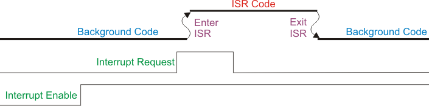

Interrupciones
¿Qué es una interrupción? (definición + acrónimos)
Una interrupción es un evento asíncrono que preempta el flujo normal de ejecución para correr una rutina corta y de alta prioridad llamada ISR. Se usan para reaccionar de inmediato a eventos de hardware o software (timer, UART RX, DMA done, PIO, GPIO, etc.) sin busy-waiting.
Acrónimos y conceptos (manteniendo inglés → traducción):
- ISR — Interrupt Service Routine — Rutina de Servicio de Interrupción.
- IRQ — Interrupt ReQuest — Petición de Interrupción (la línea/evento).
- NVIC — Nested Vectored Interrupt Controller — Controlador de Interrupciones Anidado y Vectorizado (prioridades, despacho, anidamiento).
- Vector table — Vector Table — Tabla de vectores (arreglo de direcciones de ISR).
- Masking — Interrupt Masking — Enmascaramiento de interrupciones (bloqueo temporal).
- Priority — Interrupt Priority — Prioridad (número menor = mayor urgencia en Cortex-M).
- Edge vs Level — Edge-triggered vs Level-triggered — Disparo por flanco vs por nivel.
- Polarity — Polarity — Polaridad (Rising/Falling, Active-High/Active-Low).
Flujo de control durante una interrupción (con diagrama)

Lectura del diagrama (de abajo hacia arriba):
-
Interrupt Enable (habilitación global/de línea)
Si está LOW, la CPU ignora la petición. Al pasar a HIGH, la CPU puede atender la IRQ (Interrupt ReQuest — Petición de Interrupción). -
Interrupt Request (evento)
Es el disparo (edge o level). Con la línea habilitada, el NVIC marca la IRQ como pendiente y compara prioridades. -
Background Code → Enter ISR
La CPU interrumpe el hilo de fondo y auto-apila registros (R0–R3, R12, LR, PC, xPSR).
Carga la dirección de la ISR desde la Vector Table.
Latencia de interrupción = tiempo desde que la IRQ es válida hasta la primera instrucción de la ISR. -
ISR Code
Regla de oro: ack/clear temprano (limpiar la fuente) y trabajo mínimo.
Tiempo de servicio = duración dentro de la ISR (perfílalo con un pin de traza). -
Exit ISR → Background Code
Exception return: la CPU desapila el contexto y reanuda en el punto exacto donde se interrumpió.
Overhead de retorno: costo fijo del desenlace.
Detalles (Cortex-M33):
- Preemption: una IRQ de mayor prioridad (número menor) puede interrumpir una ISR en curso.
- Tail-chaining: si termina una ISR y hay otra pendiente con prioridad válida, el core encadena sin restaurar/guardar todo de nuevo → menos overhead.
- Late arrival: si llega una IRQ más prioritaria durante la entrada a otra, el NVIC puede redirigir a la más alta antes de ejecutar la primera.
Medición práctica (traza): sube un GPIO al entrar a la ISR y bájalo al salir.
- Ancho del pulso = tiempo de servicio.
- Distancia entre el evento y el flanco de subida = latencia.
Tipos de interrupciones comunes (no solo GPIO)
| Clase | Motivo típico | Líneas IRQ (ejemplos) | Patrón de limpieza (ack/clear) |
|---|---|---|---|
| Timer/Alarm | tick periódico, scheduling | TIMER_IRQ_0..3 |
W1C en timer_hw->intr; programar el próximo alarm[i] |
| UART | RX llegó dato; TX tiene espacio | UART0_IRQ, UART1_IRQ |
Drenar FIFO / leer estado (al desaparecer la condición baja la IRQ) |
| DMA | transferencia completa / error | DMA_IRQ_0, DMA_IRQ_1 |
W1C en estado/IRQ del canal |
| PIO | IRQ de SM, umbrales de FIFO | PIO0_IRQ_0/1, PIO1_IRQ_0/1 |
Leer/limpiar flags o drenar FIFO |
| PWM | wrap, compare | PWM_IRQ_WRAP |
W1C en bit de IRQ de PWM |
| I²C/SPI | fin de transferencia, FIFOs, errores | I2C0_IRQ/I2C1_IRQ, SPI0_IRQ/SPI1_IRQ |
Leer estado/limpiar flags |
| SysTick (núcleo) | timebase del core | Excepción SysTick | Gestionado por registros de SysTick |
Edge-triggered vs Level-triggered y polaridad
-
Edge-triggered: dispara en una transición (p. ej., flanco interno de timer o GPIO rising/falling).
Pro: no re-dispara mientras se mantenga el nivel; ideal para eventos discretos.
Contra: si se pierde el flanco, se pierde el evento. -
Level-triggered: permanece pendiente mientras la condición siga activa (p. ej., RX FIFO no vacía).
Pro: difícil “perder” eventos sostenidos.
Contra: debes remover la causa (leer FIFO, limpiar flag) o re-entrará.
Polarity (polaridad):
- En GPIO: flancos Rising/Falling o niveles Active-High/Active-Low.
- En periféricos: piensa “¿qué condición la activa y cómo la elimino?”.
Vectores de ISR y Prioridades NVIC en Cortex-M33 (16 niveles)
Idea clave: en Cortex-M, un número de prioridad más bajo significa mayor prioridad (p. ej., 0 > 1 > …).
En M33, el número de niveles efectivos es 2^(__NVIC_PRIO_BITS). En muchos M33 hay 4 bits → 16 niveles (0–15).
// Macro útil para programar prioridades correctamente (escala a 8 bits de registro)
#define NVIC_PRIO(level) ((uint8_t)((level) << (8 - __NVIC_PRIO_BITS)))
Asignación sugerida (ajústala a tu práctica):
| Nivel (0 = altísima) | Uso típico | Motivo |
|---|---|---|
| 0–1 | Captura/tiempos ultra críticos, hard-deadline | Preemption garantizada |
| 2–3 | DMA done que alimenta pipelines | Minimiza latencia de reabastecimiento |
| 4–5 | Timer/Alarm base de tiempo/planificador | Jitter bajo razonable |
| 6–7 | UART RX con tráfico alto | Evitar overflow de FIFO |
| 8–10 | PIO/PWM/I²C/SPI según caso | Trabajo regular |
| 11–13 | GPIO y tareas no críticas | |
| 14–15 | Telemetría/depuración | Menor prioridad |
Máscaras útiles (Cortex-M33):
- PRIMASK (Interrupt Mask): bloquea todas las IRQ “normales” (NMI/HardFault siguen).
- BASEPRI (Priority Mask): bloquea IRQ con prioridad numéricamente ≥ a un umbral; deja pasar las más urgentes.
Ejemplo (bloquear ≥ 8, permitir 0..7):
uint32_t old = __get_BASEPRI();
__set_BASEPRI(NVIC_PRIO(8)); // umbral
// sección crítica con altas prioridades habilitadas
__set_BASEPRI(old);
Excepciones del sistema: NMI (no enmascarable), HardFault, y system handlers (SysTick, SVCall) con prioridades programables vía SCB->SHPR o NVIC_SetPriority() (IRQs negativos en CMSIS).
Glosario Pico SDK (control de interrupciones y periféricos)
NVIC / control global (hardware/irq.h):
- irq_set_exclusive_handler(irq_number_t irq, irq_handler_t fn) — ISR exclusiva.
- irq_add_shared_handler(irq_number_t irq, irq_handler_t fn, int order) — ISR compartida.
- irq_remove_handler(irq_number_t irq, irq_handler_t fn) — Quitar handler.
- irq_set_enabled(irq_number_t irq, bool enabled) — Habilitar línea NVIC.
- irq_is_enabled(irq_number_t irq) — Consultar.
- irq_set_priority(irq_number_t irq, uint8_t prio) — Fijar prioridad (usa NVIC_PRIO(x)).
- uint32_t f = save_and_disable_interrupts(); ... restore_interrupts(f); — Sección crítica atómica.
Timer (hardware/timer.h): timer_hw->alarm[i], timer_hw->intr, timer_hw->inte, timer_hw->timerawl.
UART (hardware/uart.h): uart_init, uart_is_readable, uart_getc, uart_is_writable, uart_putc_raw, uart_set_irq_enables.
GPIO (hardware/gpio.h): gpio_set_irq_enabled, gpio_set_irq_enabled_with_callback, gpio_acknowledge_irq.
Patrones de configuración (aplican a cualquier periférico)
1) Preparar periférico (clocks/pines, modo, estado).
2) Instalar handler: irq_set_exclusive_handler(IRQn, isr);
3) Fijar prioridad: irq_set_priority(IRQn, NVIC_PRIO(nivel));
4) Habilitar NVIC: irq_set_enabled(IRQn, true);
5) Habilitar fuente en el periférico (RX en UART, Alarm en Timer, etc.).
6) En la ISR: ack/clear temprano, trabajo mínimo, diferir lo pesado.
Ejemplo A — Timer Alarm (IRQ periódica, bajo nivel con NVIC)
// timer_irq_example.c
#include "pico/stdlib.h"
#include "hardware/irq.h"
#include "hardware/timer.h"
#ifndef __NVIC_PRIO_BITS
# error "__NVIC_PRIO_BITS no definido por CMSIS"
#endif
#define NVIC_PRIO(level) ((uint8_t)((level) << (8 - __NVIC_PRIO_BITS)))
#define LED_PIN 25
static const uint32_t PERIOD_US = 1000; // 1 kHz
void on_timer0_irq(void) {
// 1) Ack (write-one-to-clear)
timer_hw->intr = 1u << 0;
// 2) Programar siguiente disparo
timer_hw->alarm[0] = timer_hw->timerawl + PERIOD_US;
// 3) Trabajo mínimo (observable)
gpio_xor_mask(1u << LED_PIN);
}
int main() {
stdio_init_all();
gpio_init(LED_PIN);
gpio_set_dir(LED_PIN, GPIO_OUT);
gpio_put(LED_PIN, 0);
// Primer disparo y habilitar fuente
timer_hw->alarm[0] = timer_hw->timerawl + PERIOD_US;
hw_set_bits(&timer_hw->inte, 1u << 0);
// NVIC: instalar, prioridad y habilitar
irq_set_exclusive_handler(TIMER_IRQ_0, on_timer0_irq);
irq_set_priority(TIMER_IRQ_0, NVIC_PRIO(4)); // alta razonable
irq_set_enabled(TIMER_IRQ_0, true);
while (true) { tight_loop_contents(); }
}
Ejemplo B — UART RX (IRQ tipo level)
// uart_rx_irq_example.c
#include "pico/stdlib.h"
#include "hardware/irq.h"
#include "hardware/uart.h"
#include "hardware/gpio.h"
#ifndef __NVIC_PRIO_BITS
# error "__NVIC_PRIO_BITS no definido por CMSIS"
#endif
#define NVIC_PRIO(level) ((uint8_t)((level) << (8 - __NVIC_PRIO_BITS)))
#define UART_ID uart0
#define BAUD 115200
#define UART_TXPIN 0
#define UART_RXPIN 1
void on_uart0_irq(void) {
// La IRQ permanece mientras RX FIFO tenga datos (level-triggered)
while (uart_is_readable(UART_ID)) {
uint8_t ch = uart_getc(UART_ID); // drena FIFO (elimina la condición)
uart_putc_raw(UART_ID, ch); // eco rápido (evitar printf en ISR)
}
}
int main() {
stdio_init_all();
// Pines UART
gpio_set_function(UART_TXPIN, GPIO_FUNC_UART);
gpio_set_function(UART_RXPIN, GPIO_FUNC_UART);
uart_init(UART_ID, BAUD);
// NVIC
irq_set_exclusive_handler(UART0_IRQ, on_uart0_irq);
irq_set_priority(UART0_IRQ, NVIC_PRIO(6)); // media-alta si hay tráfico
irq_set_enabled(UART0_IRQ, true);
// Fuente: habilitar interrupción de RX (no TX)
uart_set_irq_enables(UART_ID, true, false);
while (true) { tight_loop_contents(); }
}
Ejemplo C — Entrada externa GPIO (edge + polaridad)
// gpio_irq_example.c
#include "pico/stdlib.h"
#include "hardware/irq.h"
#include "hardware/gpio.h"
#ifndef __NVIC_PRIO_BITS
# error "__NVIC_PRIO_BITS no definido por CMSIS"
#endif
#define NVIC_PRIO(level) ((uint8_t)((level) << (8 - __NVIC_PRIO_BITS)))
#define LED_PIN 25 // ajusta según tu placa
#define BTN_PIN 2 // botón a GND, pull-up interno
void gpio_irq_callback(uint gpio, uint32_t events) {
// Ack temprano (especialmente importante en level)
gpio_acknowledge_irq(gpio, events);
if (gpio == BTN_PIN && (events & GPIO_IRQ_EDGE_FALL)) {
gpio_put(LED_PIN, !gpio_get(LED_PIN));
}
}
int main() {
stdio_init_all();
gpio_init(LED_PIN);
gpio_set_dir(LED_PIN, GPIO_OUT);
gpio_put(LED_PIN, 0);
gpio_init(BTN_PIN);
gpio_set_dir(BTN_PIN, GPIO_IN);
gpio_pull_up(BTN_PIN);
// Prioridad NVIC (0 = más alta)
irq_set_priority(IO_IRQ_BANK0, NVIC_PRIO(12));
// Habilitar falling edge y registrar callback global de GPIO
gpio_set_irq_enabled_with_callback(
BTN_PIN,
GPIO_IRQ_EDGE_FALL,
true,
&gpio_irq_callback
);
while (true) { tight_loop_contents(); }
}
Debounce (rápido): ignora eventos < X ms con time_us_64() o confirma estado con un Timer 10–20 ms tras el flanco.
Tabla mental de ack/clear (cómo “apagar” la IRQ)
| Periférico | Qué la dispara | Cómo limpiarla en la ISR |
|---|---|---|
| Timer/Alarm | timer == alarm[i] |
timer_hw->intr = 1u << i; y programar próximo alarm[i] |
| UART RX | RX FIFO no vacía | Leer bytes hasta !uart_is_readable() |
| UART TX | TX FIFO con espacio | Escribir hasta completar; deshabilitar IRQ de TX si no se necesita |
| DMA | Canal completado | W1C en registro de estado/IRQ del canal |
| PIO | IRQ de SM / nivel de FIFO | Leer/limpiar flags de PIO o drenar FIFO |
| PWM wrap | Contador hace wrap | W1C en bit de IRQ de PWM |